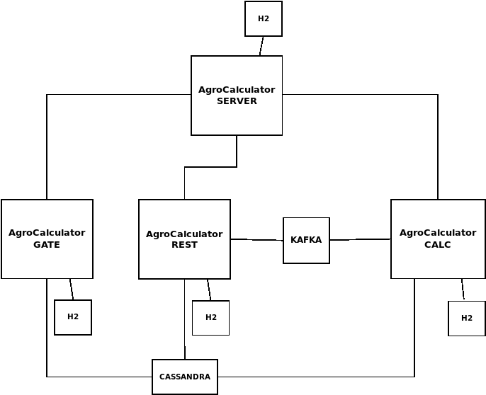
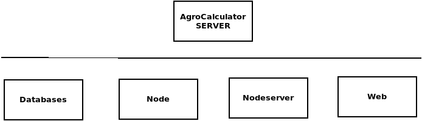
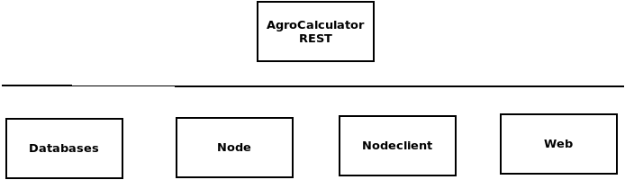
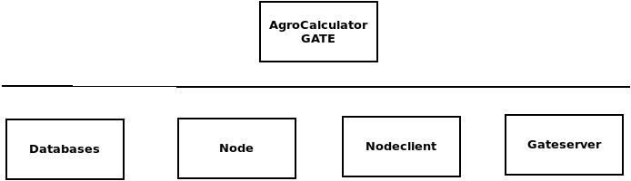

Общая структура приложения

Внешние модули:
1. Apache Kafka (в т.ч. Zookeeper) — распределённый программный брокер сообщений.
2. Apache Cassandra — распределённая система управления базами данных, относящаяся к классу NoSQL-систем и рассчитанная на создание высокомасштабируемых и надёжных хранилищ огромных массивов данных, представленных в виде хэша.
3. H2 — реляционная встраиваемая кросплатформенная база данных, написанная на языке Java.
Собственные модули:
1. AgroCalculator SERVER — модуль управления и контроля за работой остальных модулей. Предоставляет REST-интерфейс для подключения администратора. Производит обмен информации с модулями в формате зашифрованных алгоритмом DES сообщений через TCP/IP соединение. Хранит настройки всех модулей во встроенной базе данных H2. Запускается в единственном экземпляре.
2. AgroCalculator REST — модуль взаимодействия с клиентскими системами (например, AgroCore). Авторизация происходит по специальному токену (технология JWT). Выполняет две задачи: предоставляет удобный доступ к БД Cassandra, позволяет как отправлять новые задачи на вычислительные модули AgroCore CALC, так и считывать результаты уже посчитанных задач. Может запускаться в нескольких экземплярах и балансироваться, например, сервером NGINX. При первом запуске требуется указать адрес AgroCalculator SERVER, после запуска подтвердить генерацию ключа на сервере.
3. AgroCalculator GATE — модуль приёма сообщений с устройств (или с ретранслятора). В данный момент полностью реализован протокол IPS1.1. Сообщения сохраняются в БД Cassandra. Может запускаться в нескольких экземплярах и балансироваться, например, сервером NGINX. При первом запуске требуется указать адрес AgroCalculator SERVER, после запуска подтвердить генерацию ключа на сервере.
4. AgroCalculator CALC — модуль ресурсозатратных расчётов. Принимает сообщения с параметрами расчётов от AgroCalculator REST по Kafka. Необходимые данные (например, координаты устройств и геозоны) берёт в БД Cassandra. Результаты расчётов отправляет на AgroCalculator REST по Kafka. Может запускаться в нескольких экземплярах (балансируется посредством Kafka). При первом запуске требуется указать адрес AgroCalculator SERVER, после запуска подтвердить генерацию ключа на сервере.
5. AgroCalculator WEB — фронтэнд приложения AgroCalculator SERVER. Написан на движке Angular 5. Оперирует REST-интерфейсом сервера, легко может быть переписан на APEX. На схеме отсутствует.
Внутренняя структура модулей
1. AgroCalculator SERVER

Databases — пакет взаимодействия с базами данных;
Node — пакет, содержащий скрипты автозапуска (например, загрузка дефолтных настроек для новых нод);
Nodeserver — пакет взаимодействия с остальными нодами, основанный на библиотеке Netty;
Web — пакет, реализующий REST- интерфейс для администрирования работы системы.
2. AgroCalculator REST

Databases — пакет взаимодействия с базами данных;
Node — пакет, содержащий скрипты автозапуска и командный процессор;
Nodeclient — пакет взаимодействия с AgroCalculator SERVER через TCP/IP.
Web — пакет, реализующий REST интерфейс для клиентов системы.
3. AgroCalculator GATE

Databases — пакет взаимодействия с базами данных;
Node — пакет, содержащий скрипты автозапуска и командный процессор;
Nodeclient — пакет взаимодействия с AgroCalculator SERVER через TCP/IP.
Gateserver — пакет, реализующий сервер приёма сообщений с устройств или ретранслятора, основанный на библиотеке Netty.
4. AgroCalculator CALC
Databases — пакет взаимодействия с базами данных;
Node — пакет, содержащий скрипты автозапуска и командный процессор;
Nodeclient — пакет взаимодействия с AgroCalculator SERVER через TCP/IP.
Calculator — пакет, содержащий вычислительный модули (отдельный для каждой задачи) и управляющие потоки.
Стандартная структура пакетов
aspects — аспекты, используемые для выноса логирования из основного кода;
components — вспомогательные классы, содержащие универсальные методы, например, для работы с геоданными;
models — модели объектов;
modules — вычислительные модули;
repositories — JPA и Cassandra репозитории, генерирующие операции с БД;
services — методы взаимодействия с БД высокого уровня.п